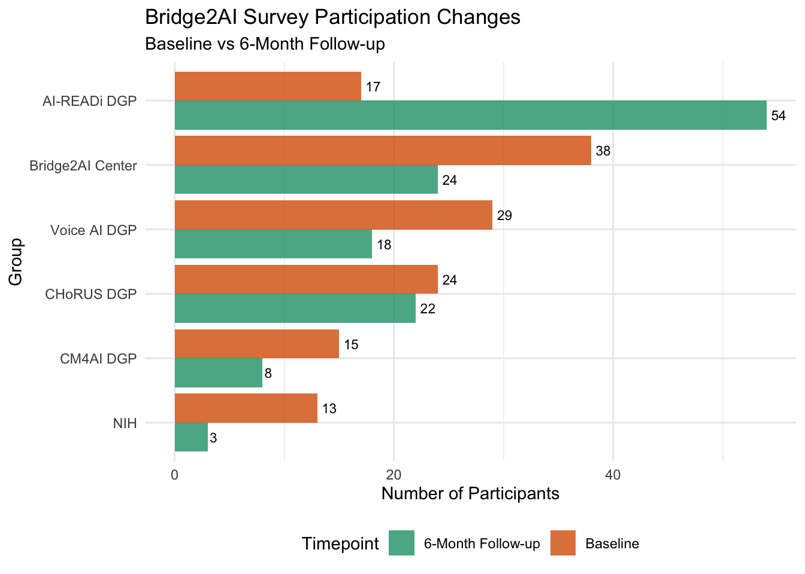
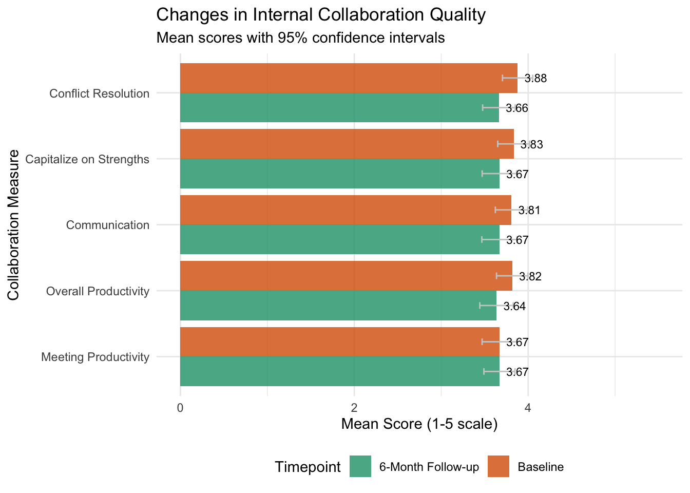
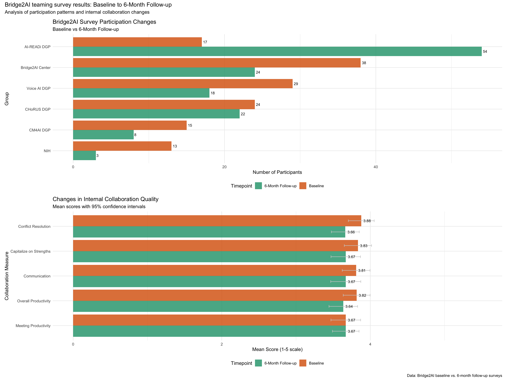

Last updated: 2026-10-22
Checks: 7 0
Knit directory: b2ai_survey/
This reproducible R Markdown analysis was created with workflowr (version 1.7.2). The Checks tab describes the reproducibility checks that were applied when the results were created. The Past versions tab lists the development history.
Great! Since the R Markdown file has been committed to the Git repository, you know the exact version of the code that produced these results.
Great job! The global environment was empty. Objects defined in the global environment can affect the analysis in your R Markdown file in unknown ways. For reproduciblity it’s best to always run the code in an empty environment.
The command set.seed(20201118) was run prior to running the code in the R Markdown file. Setting a seed ensures that any results that rely on randomness, e.g. subsampling or permutations, are reproducible.
Great job! Recording the operating system, R version, and package versions is critical for reproducibility.
Nice! There were no cached chunks for this analysis, so you can be confident that you successfully produced the results during this run.
Great job! Using relative paths to the files within your workflowr project makes it easier to run your code on other machines.
Great! You are using Git for version control. Tracking code development and connecting the code version to the results is critical for reproducibility.
The results in this page were generated with repository version a80bfb0. See the Past versions tab to see a history of the changes made to the R Markdown and HTML files.
Note that you need to be careful to ensure that all relevant files for the analysis have been committed to Git prior to generating the results (you can use wflow_publish or wflow_git_commit). workflowr only checks the R Markdown file, but you know if there are other scripts or data files that it depends on. Below is the status of the Git repository when the results were generated:
Ignored files:
Ignored: data/raw/
Note that any generated files, e.g. HTML, png, CSS, etc., are not included in this status report because it is ok for generated content to have uncommitted changes.
These are the previous versions of the repository in which changes were made to the R Markdown (analysis/survey_analyses.rmd) and HTML (docs/survey_analyses.html) files. If you’ve configured a remote Git repository (see ?wflow_git_remote), click on the hyperlinks in the table below to view the files as they were in that past version.
| File | Version | Author | Date | Message |
|---|---|---|---|---|
| html | f34fde9 | Emily Boyer | 2026-10-16 | Build site. |
| html | 27f76a8 | Emily Boyer | 2026-10-01 | Build site. |
| Rmd | 4374634 | Emily Boyer | 2026-10-01 | Fix follow-up survey parsing and participation table labels on the |
| html | 9cd26c5 | Emily Boyer | 2026-10-01 | Add impact dashboard link to the navbar of existing pages |
| Rmd | 66ad9df | Emily Boyer | 2026-10-01 | Restore pre-existing pages to their original state |
| html | 66ad9df | Emily Boyer | 2026-10-01 | Restore pre-existing pages to their original state |
| html | 9198f77 | Emily Boyer | 2026-10-01 | Build site. |
| html | 31d90b6 | Emily Boyer | 2026-10-01 | Rebuild survey analysis and impact dashboard pages |
| Rmd | db87bd9 | Emily Boyer | 2026-10-01 | Fix follow-up survey parsing and participation table labels |
| html | 4ae8e85 | Emily Boyer | 2026-10-01 | Rebuild site pages with impact dashboard link and hidden setup sections |
| Rmd | 287b1ac | Emily Boyer | 2026-10-01 | Hide setup and data preparation sections on onboarding and survey pages |
| Rmd | 609d00d | Janani Ravi | 2025-11-20 | Update analysis docs and site, improve onboarding |
| html | 609d00d | Janani Ravi | 2025-11-20 | Update analysis docs and site, improve onboarding |
| Rmd | 81a7e33 | Janani Ravi | 2025-11-05 | add onboarding analysis, workflowr |
This analysis examines changes in collaboration patterns, resource utilization, and team dynamics within the Bridge2AI consortium between baseline and 6-month follow-up surveys. The analysis identifies key trends in participation, internal collaboration quality, and emerging challenges to inform the NIH Collaboration Improvement Plan.
Data Overview:Baseline survey: 136 participants, 69 variablesFollow-up survey: 129 participants, 72 variablesCleaned data dimensions:Baseline: 136 participantsFollow-up: 129 participants| Group | Baseline | 6-month follow-up | Change | % Change |
|---|---|---|---|---|
| AI-READi DGP | 17 | 54 | 37 | 217.6 |
| CHoRUS DGP | 24 | 22 | -2 | -8.3 |
| CM4AI DGP | 15 | 8 | -7 | -46.7 |
| NIH | 13 | 3 | -10 | -76.9 |
| Voice AI DGP | 29 | 18 | -11 | -37.9 |
| Bridge2AI Center | 38 | 24 | -14 | -36.8 |

Survey participation changes between baseline and 6-month follow-up
| Timepoint | Measure | N | Mean | SD | SE | CI Lower | CI Upper |
|---|---|---|---|---|---|---|---|
| 6-Month Follow-up | Capitalize on Strengths | 121 | 3.669 | 1.113 | 0.101 | 3.471 | 3.868 |
| 6-Month Follow-up | Communication | 121 | 3.669 | 1.136 | 0.103 | 3.467 | 3.872 |
| 6-Month Follow-up | Conflict Resolution | 119 | 3.664 | 1.044 | 0.096 | 3.476 | 3.851 |
| 6-Month Follow-up | Meeting Productivity | 121 | 3.669 | 1.003 | 0.091 | 3.491 | 3.848 |
| 6-Month Follow-up | Overall Productivity | 121 | 3.636 | 1.080 | 0.098 | 3.444 | 3.829 |
| Baseline | Capitalize on Strengths | 108 | 3.833 | 0.972 | 0.093 | 3.650 | 4.017 |
| Baseline | Communication | 110 | 3.809 | 1.000 | 0.095 | 3.622 | 3.996 |
| Baseline | Conflict Resolution | 107 | 3.879 | 0.918 | 0.089 | 3.704 | 4.053 |
| Baseline | Meeting Productivity | 109 | 3.670 | 1.063 | 0.102 | 3.470 | 3.869 |
| Baseline | Overall Productivity | 109 | 3.817 | 0.964 | 0.092 | 3.636 | 3.997 |

Changes in internal collaboration quality metrics
| Resource | Baseline % | Follow-up % | Change % |
|---|---|---|---|
| Google Drive | 59.7 | 44.7 | 15.0 |
| Team Intranet | 36.7 | 23.6 | 13.1 |
| Bridge2AI Directory | 28.9 | 21.1 | 7.8 |
| Google Groups | 17.2 | 16.1 | 1.1 |
| Slack | 32.8 | 41.9 | -9.1 |
| Monday.com | 24.8 | 34.7 | -9.9 |
Insufficient data for group-specific heatmap| Measure | Label | Baseline mean | Follow-up mean | Difference | t-statistic | p-value | CI Lower | CI Upper | Significant |
|---|---|---|---|---|---|---|---|---|---|
| internal_conflict_resolution | Conflict Resolution | 3.8785 | 3.6639 | -0.2146 | -1.6443 | 0.1015 | -0.4719 | 0.0426 | FALSE |
| internal_overall_productivity | Overall Productivity | 3.8165 | 3.6364 | -0.1802 | -1.3367 | 0.1827 | -0.4457 | 0.0854 | FALSE |
| internal_strengths | Capitalize on Strengths | 3.8333 | 3.6694 | -0.1639 | -1.1896 | 0.2355 | -0.4354 | 0.1076 | FALSE |
| internal_communication | Communication | 3.8091 | 3.6694 | -0.1397 | -0.9939 | 0.3213 | -0.4166 | 0.1372 | FALSE |
| internal_meeting_productivity | Meeting Productivity | 3.6697 | 3.6694 | -0.0003 | -0.0022 | 0.9982 | -0.2697 | 0.2691 | FALSE |
| Challenge area | N | Mean level | % High challenge (≥4) |
|---|---|---|---|
| Consortium Structure | 125 | 3.31 | 45.6 |
| Infrastructure | 125 | 2.99 | 32.0 |
| Consensus Building | 125 | 2.81 | 28.0 |
| Accountability & Commitment | 125 | 2.76 | 26.4 |
| Communication | 125 | 2.75 | 29.6 |
| Workplans | 124 | 2.67 | 23.4 |
| Project Management | 124 | 2.63 | 24.2 |
| Fostering Trust | 125 | 2.52 | 22.4 |
| Managing Conflict | 125 | 2.35 | 20.0 |
| Source group | Target group | N | Mean interaction | % High interaction (≥4) |
|---|---|---|---|---|
| NIH | AI-READi DGP | 3 | 3.67 | 33.3 |
| CM4AI DGP | Voice AI DGP | 8 | 3.25 | 37.5 |
| Bridge2AI Center | AI-READi DGP | 24 | 3.08 | 37.5 |
| Bridge2AI Center | Teaming Core | 21 | 3.05 | 23.8 |
| NIH | CHoRUS DGP | 3 | 3.00 | 33.3 |
| Bridge2AI Center | Admin Core | 19 | 2.95 | 31.6 |
| Bridge2AI Center | CM4AI DGP | 24 | 2.92 | 29.2 |
| Bridge2AI Center | CHoRUS DGP | 24 | 2.88 | 33.3 |
| Voice AI DGP | Ethics Core | 17 | 2.76 | 17.6 |
| Bridge2AI Center | SWD Core | 21 | 2.67 | 28.6 |
| NIH | Ethics Core | 3 | 2.67 | 0.0 |
| Bridge2AI Center | Standards Core | 17 | 2.65 | 17.6 |
| Bridge2AI Center | Voice AI DGP | 24 | 2.62 | 20.8 |
| CM4AI DGP | Ethics Core | 8 | 2.62 | 25.0 |
| AI-READi DGP | Tools Core | 53 | 2.55 | 26.4 |

Combined visualization of key survey findings
1. Participation changes- Largest increase: AI-READi DGP (+37 participants)
- Largest decrease: Bridge2AI Center (-14 participants)2. Internal collaboration changes- No statistically significant changes in internal collaboration metrics3. Recommendations for collaboration improvement plan- Focus on groups with declining internal collaboration scores- Address specific challenge areas identified in follow-up survey- Leverage high-performing groups as mentors for struggling groups- Monitor participation trends in future surveysNote: To run this analysis, ensure you have the following files in your working directory:
Bridge2AI_BaselineSurvey_Deidentified.csvBridge2AI_6mo_FollowUpSurvey_Deidentified.csvbaseline_mapping.tsvfollowup_mapping.tsv
R version 4.5.1 (2025-06-13)
Platform: aarch64-apple-darwin20
Running under: macOS Tahoe 26.6.2
Matrix products: default
BLAS: /Library/Frameworks/R.framework/Versions/4.5-arm64/Resources/lib/libRblas.0.dylib
LAPACK: /Library/Frameworks/R.framework/Versions/4.5-arm64/Resources/lib/libRlapack.dylib; LAPACK version 3.12.1
locale:
[1] C.UTF-8/C.UTF-8/C.UTF-8/C/C.UTF-8/C.UTF-8
time zone: America/Denver
tzcode source: internal
attached base packages:
[1] stats graphics grDevices utils datasets methods base
other attached packages:
[1] kableExtra_1.4.0 knitr_1.51 RColorBrewer_1.1-3 scales_1.4.0
[5] patchwork_1.3.1 here_1.0.2 lubridate_1.9.5 forcats_1.0.0
[9] stringr_1.6.0 dplyr_1.2.1 purrr_1.2.1 readr_2.2.0
[13] tidyr_1.3.2 tibble_3.3.1 ggplot2_4.0.2 tidyverse_2.0.0
loaded via a namespace (and not attached):
[1] sass_0.4.10 generics_0.1.4 xml2_1.5.2 stringi_1.8.7
[5] hms_1.1.4 digest_0.6.39 magrittr_2.0.5 evaluate_1.0.5
[9] grid_4.5.1 timechange_0.4.0 fastmap_1.2.0 rprojroot_2.1.1
[13] workflowr_1.7.2 jsonlite_2.0.0 whisker_0.4.1 promises_1.5.0
[17] viridisLite_0.4.3 textshaping_1.0.1 jquerylib_0.1.4 cli_3.6.5
[21] crayon_1.5.3 rlang_1.2.0 bit64_4.6.0-1 withr_3.0.2
[25] cachem_1.1.0 yaml_2.3.12 otel_0.2.0 parallel_4.5.1
[29] tools_4.5.1 tzdb_0.5.0 httpuv_1.6.17 vctrs_0.7.2
[33] R6_2.6.1 lifecycle_1.0.5 git2r_0.36.2 bit_4.6.0
[37] fs_2.0.1 vroom_1.7.1 pkgconfig_2.0.3 pillar_1.11.1
[41] bslib_0.10.0 later_1.4.8 gtable_0.3.6 glue_1.8.0
[45] Rcpp_1.1.1 systemfonts_1.3.2 xfun_0.57 tidyselect_1.2.1
[49] rstudioapi_0.17.1 farver_2.1.2 htmltools_0.5.9 labeling_0.4.3
[53] svglite_2.2.2 rmarkdown_2.31 compiler_4.5.1 S7_0.2.1